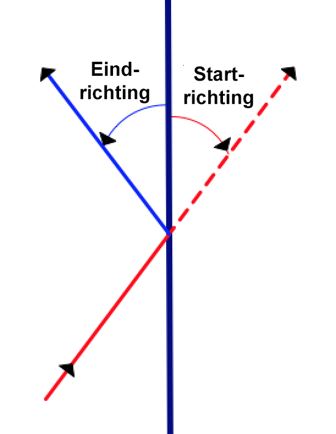
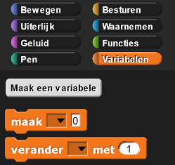

Het Spel Pong
In dit project, ga je een computerspel genaamd Pong namaken, voor het eerst ontwikkeld door
Atari in 1972. Je gaat code schrijven voor het batje waardoor het omhoog en omlaag kan bewegen, gebaseerd
op invoer van een toetsenbord. Je gaat ook code schrijven voor de bal waardoor hij heen en weer kan
stuiteren als hij tegen een muur of batje botst.

-
 Bespreek met je buur de wiskunde achter het stuiteren van de bal tegen het batje. Wat is de relatie
tussen de startrichting van de bal als hij het batje raakt en de eindrichting als de bal er vanaf
stuitert? Het volgende diagram helpt misschien.
Bespreek met je buur de wiskunde achter het stuiteren van de bal tegen het batje. Wat is de relatie
tussen de startrichting van de bal als hij het batje raakt en de eindrichting als de bal er vanaf
stuitert? Het volgende diagram helpt misschien.
 - Maak sprites voor het batje en de bal en geef ze een uiterlijk. Voor het batje is het uiterlijk een rechthoek en voor de bal een cirkel.
- Schrijf de code om het batje omhoog en -laag te bewegen wanneer de gebruiker op de toets voor pijltje omhoog of pijltje omlaag drukt. Laat het batje niet verder bewegen dan de rand van het scherm.
- Schrijf de code om het balletje te laten bewegen wanneer er op de groene vlag geklikt wordt en om van de hoeken van het scherm en het batje te stuiteren. Er is al een blok om van de hoeken van het scherm af te stuiteren.
Doe deze opdracht zelfstandig, maar als je vastzit kan je kijken naar Hints voor het spel Pong.
- Voeg een scorebord toe aan je spel. Iedere keer als de bal het batje raakt, moet de speler een punt
krijgen en als hij de bal mist, dus als de bal de rechter muur raakt, dan verliest hij een punt. Je
kan een variabele maken om de score bij te houden.
 - Maak een tweede batje om het spel voor meerder spelers te maken. Pas de code aan dat de invoer
werkt
voor twee spelers.

- Maak een tweede batje (of gebruik degene van hierboven) en laat dit batje bestuurd worden door de
computer. Hint: Je kan het tweede batje automatiseren met het blok hieronder van het Waarnemen-menu.